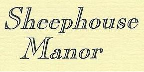

|
|
 |
Sheephouse Manor
Sheephouse Road
Maidenhead
Berks SL6 8HJ
U.K.
|
Tel +44(0)1628 776902
Fax +44(0)1628 625138
email:
info@sheephousemanor.co.uk
Find us on Facebook:
|
|
Access Statement for The West Wing
Introduction
- We aim to cater for the needs of all our visitors in our home based 3 bedroom B&B, and 4 self-catering holiday cottages.
- The following statement is a summary of our provision. If you have any specific questions please feel free to call us and we will endeavour to help.
Pre-arrival
- There is a bus stop 100m from our front gates with an hourly service from Maidenhead Town Centre from 8.00am to 6.00pm Monday to Saturday.
- The main train station in Maidenhead is 10 minutes away by car.
- There are taxis available from the station.
- There is a local taxi service with accessible taxis if required. We can make a booking for you.
- We have a full website with on line booking facility and photos.
- You can contact us by phone, fax or email or text see details)
- Information and breakfast menu can be provided in large print.
- We can email further pictures to you on request
Arrival and car parking
- On arrival there is a wide gate open 24 hours when we are operating.
- The pathway is compressed gravel
- There are 9 car-parking bays.
- 5 bays are within 20m down a 1m wide loose gravel pathway to the B&B entrance.
- 4 bays are 10m from the cottage entrances.
- The path to the B&B/Reception front door is 10m from the nearest bay along a loose gravel path.
- The pathway in front of the cottages 1,2, and 4 is a 3.2m wide solid concrete path. You can drive up to the door for drop off, and park 10m away.
- The path to cottage 3 is a 1m wide cobbled patio stone path, with the nearest parking bay 10m from the entrance door. The entrance has a 13cm step to the patio, and a step 10cm onto the porch, and an 8cm step into the cottage.
- The nearest parking bay is 10m from cottage 3
- We can assist guests with luggage
- The nearest restaurants and pubs are 0.5 miles away.
Main Entrance and Reception
- The front door is on a level with the path.
- There is a bell at 130cm from ground level
- The door is always locked but guests are given their own Yale key
- The Yale lock is 140cm from ground level
- The front door is 81cm wide leading immediately into a lobby 90cm x 1.4m
- There is immediately a 68cm wide door into the dining room.
Dining room, Bar, Lounges
- The flooring in the dining room is short pile carpet
- Breakfast is served in the dining room on the ground floor
- There are no steps
- Furniture is flexible and can be moved around
- There are chairs with arms and without
- Menus can be provided in large print
- We do play background music
- Tables have under space of 70cm depth and 90cm width. The tables are 68 cm high
- There is no public sitting room
Public areas WC
- All bedrooms are en-suite but there are no public WC’s available in the house
Laundry
- The washing machine and tumble dryer are housed in a block with a 50 cm wide entrance and up a 17cm step
- The space inside is 70cm wide x 1.0m depth
Shop
Leisure Facilities
Outdoor facilities
Phone
- The payphone is located in the entrance lobby. It is 120 cm from floor level.
Conference & meeting rooms, Banqueting, Clubs Entertainment
Grounds and gardens and beyond
- We have a large 2-acre garden, which is mostly to lawn with flower borders.
- There are benches for guests to sit in around the pond.
- We have a 0.5-acre paddock at the rear which guests can let dogs out in.
- The Thames Path is 1000m away, and also the Green Way Walk about 1000m from us. These are both ideal to walk dogs or get exercise yourself. The walks from there go for miles in beautiful countryside. Guide books and maps available
Bedrooms
- All B&B bedrooms are located on the first floor.
- This is accessed through a 71 cm door and by turning left in a 1m x 1m space with flooring of stone tiles.
- There are 11 stairs. Steps are 20cm high and 20cm deep and 75cm wide.
- The top 3 steps are 40 -50cm wide and turn 90 degrees
- There is a handrail at 80cm high along the bottom 10 steps
- All bedrooms are reached along a corridor of 60cm –1.0m wide.
- There is short pile carpet throughout the bedrooms and corridor. All bathrooms are lino
Cookham Bedroom
- The entrance is 74cm wide.
- There is a double bed at a height of 55cm
- There is access of 50cm all around the bed.
- There is 2.5 m space from end of bed to wardrobe and 0.70cm to the writing desk
- There is a desk with a chair without arms at a height of 50cm.
- TV with remote control
- Furniture can be moved upon request
- Ground level Mini fridge with cold drinks but can be used to store medicines
Cookham Bathroom
- There is a sliding door with a 60 cm width.
- There is 60cm x 1.0m space in the bathroom from sink to toilet to bath.
- Bath edge is 55cm high
- Basin is flat fronted and is 80 cm high and has clear under space of 30 x 50cm
- The toilet is 40cm high and is front approached.
- The bath has a shower attachment for washing hair but no shower facility
- The flooring is non-slip lino
Windsor Room
- This has en entrance door of 75cm
- There is a single bed with a 1.3m clear access from the left hand side and 0.8m access from the right.
- Bed is 55cm high
- There is a TV with remote.
- There is an armchair 40cm high with shallow armrests.
- A ground level mini fridge available for cooling drinks or personal medicines
En suite shower room
- The access is a sliding door 50 cm wide and a step of 10cm into the shower room.
- The available clear space is 60cm x 70cm.
- The shower hassliding doors, and a 28cm step into the shower. The toilet is 40cm high and the sink is 78cm high and is front approached
- The flooring is non slip lino
Eton Room
- The entrance door is 70 cm wide.
- The bed has a 1.2cm clearance from the front side and is situated against a wall on the other side.
- There is a 1.6 m space to the wardrobe and 70 cm to the dressing table.
- There is a straight back chair at the desk with no arms at 44cm high, and an easy chair height 40cm with no arms
- The dresser has an access of 50cm wide x 50 cm deep
- There is a TV with remote, and a ground level mini fridge for cold drink storage or guest’s own medicines
Private bathroom to Eton Room
- This is accessed via a 70cm wide door.
- The clearance space is 1.3m x 1.3 m
- There is a walk in shower.
- The toilet has a 60cm front clearance.
- The basin has a 2.0m front clearance and height of sink is 82cm.
- There is a towel rail adjacent to sink of 90cm high
Additional Information
- Assistance dogs welcome
- Mobile phone reception is generally good.
- We are happy to take delivery of hired equipment or medical supplies. Please let us know
- We are a non-smoking building.
- In the case of a fire the fire alarm will ring continually.
- The front door is the exit.
- Fluorescent signs will illuminate the fire exit route.
- If you require assistance during evacuation please inform us on arrival and we will ensure you are safely assisted out of the building. E.g. hearing impaired
- All bed linen and pillows are non feather and down.
Contact Information
- Address:
Sheephouse Manor
Sheephouse Road,
Maidenhead,
Berks
SL6 8HJ
- Telephone; 00441 (01628) 776902.
- Fax 01628 625138
- Email;info@sheephousemanor.co.uk
- Website; www.sheephousemanor.co.uk
- Text to 07811 366602
- Local Taxi 01628-771777
- Local equipment Hire 01628 663132
- Fax 01628 663133
- Carers UK 0808 808 7777
- Cookham Carers 01628 525048
- Careplus 01344 622950
- Local bus and train company timetables available in reception
- Mainline phone answered 8.00am to 8.00pm.
- After phone service for after-hours
- Open 12 months
- Hours flexible to business
- The B&B is our home so owners live on site and is occupied 24 hours
|
|
|